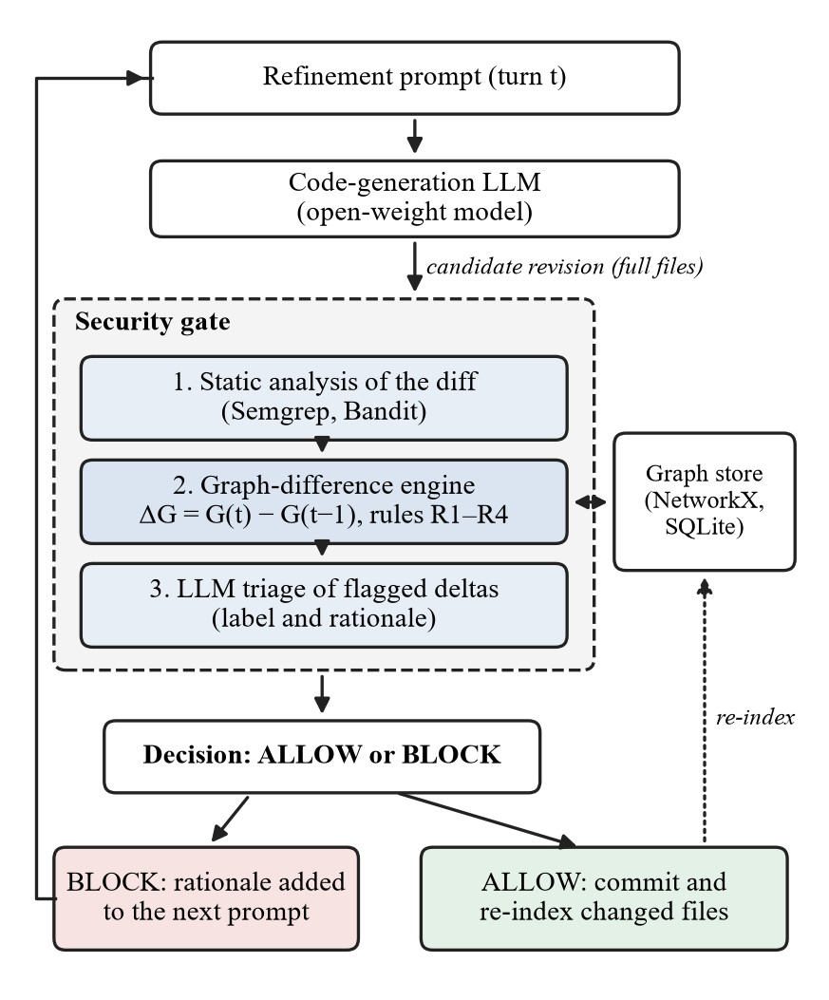
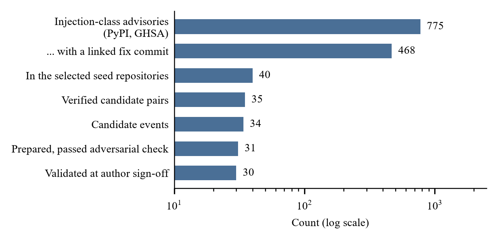
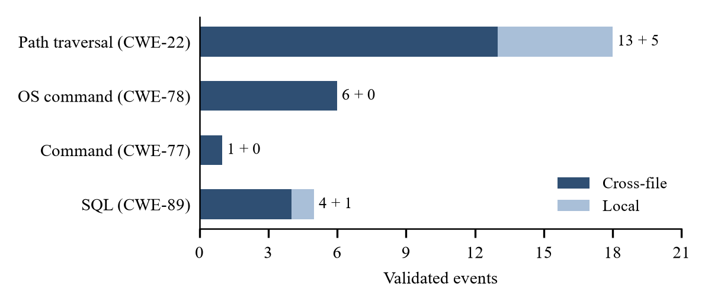

GraphGate: Toward an In-Loop Security Gate for Iterative LLM Code Refinement Using Temporal Code-Graph Deltas
Janani R Department of Artificial Intelligence and Data Science | Rajkumar Project Guide, Department of Artificial Intelligence and Data Science |
[[COLUMNS]]
Abstract—Developers rarely accept the first answer a code assistant gives them; they ask a large language model (LLM) for one revision after another. A recent controlled study found that critical vulnerabilities grew by 37.6% after only five such rounds [1]. Checks that inspect only the changed lines miss many of these regressions, because the vulnerable data flow often starts or ends in a file the revision never touched. We present GraphGate, a security gate that sits inside the refinement loop, compares the code graphs of consecutive revisions and applies four deterministic rules to their difference, using an LLM only to triage and explain what the rules flag. This paper reports the design and the first milestone: a refinement harness whose traces replay byte for byte, an experimental setup that runs on an open-weight code model, and a benchmark built from real injection-class fixes. From 775 Python security advisories we selected 12 permissively licensed projects, verified every fix link with two independent reviewers, and extracted 34 candidate regression events, labelled local or cross-file by a pre-registered rule, of which 30 were validated at author sign-off. In a first look at these 30 regressions, pattern scanners run on the change report a new finding for 1, and the graph rules flag 8. We close with the experiments that remain and the outcomes we expect from them, stated before they are run.
Index Terms—large language models, secure code generation, iterative refinement, taint analysis, code property graphs
AI coding assistants are used conversationally. A developer asks for a function, reads it, and then asks again: make it faster, add a feature, tidy it up. Most of what we know about the security of generated code, however, comes from judging single responses [2]–[4]. Shukla et al. [1] studied the loop itself: across 400 code samples and 40 rounds of requested improvements, security got worse as the rounds went on. They deliberately left out any intervention and named verification inside the loop as the follow-up that was needed.
The obvious intervention is to check each revision before accepting it, but practical checks are local to the change: a pattern scanner such as Semgrep [5] or Bandit [6] run on the diff, or an LLM reviewer shown the changed lines. Many injection flaws are not local. A revision can weaken a validation helper that other modules rely on, change a default so that a distant call becomes unsafe, or open a call path that routes user input around an existing guard. The diff can then look harmless, because the danger lies in code the diff does not show.
GraphGate represents each revision as a code graph of symbols, calls, taint edges and sanitizers, and reasons about the difference between the graphs of consecutive revisions. Four deterministic rules look for sanitizer removal, new source-to-sink paths, eliminated guards and shortened paths, and an LLM then classifies each flag and writes a rationale that can be fed into the next prompt. Keeping detection in deterministic rules makes it testable, and keeping the LLM in a triage role limits the room it has to invent findings.
Our research question is whether this cross-file grounding reduces security degradation compared with no gate and with a gate restricted to the diff. Answering it needs a harness whose runs can be replayed exactly, a benchmark of real regressions with trustworthy labels, and a protocol fixed in advance. This paper contributes:
The graph layer and its four rules are implemented and unit-tested, and a first look at what they flag is reported. The gate conditions have not yet been run on recorded traces, so no gate result is claimed, and every expected outcome is marked as an expectation.
Security of generated code. Pearce et al. [2] found that roughly 40% of programs GitHub Copilot produced for scenarios built on MITRE’s dangerous weaknesses [7] were vulnerable. In a user study by Perry et al. [3], participants with an AI assistant wrote less secure code while feeling more confident about it, and Khoury et al. [4] judged only five of 21 ChatGPT programs secure on the first attempt. These studies evaluate single responses. Iteration is usually presented as a way to improve output [8], although the gains of self-repair for code are modest and bounded by the quality of the feedback [9]; Shukla et al. [1] showed that it can also erode security, with distinct vulnerability patterns for different prompting strategies.
Static analysis and code graphs. Taint analysis reports flows of untrusted data that reach a sensitive sink without passing a sanitizer [10], and FlowDroid [11] showed how precise it can be. Yamaguchi et al. [12] merged syntax trees, control flow and program dependences into a queryable code property graph, an idea implemented in the Joern platform [13]. For Python, Pysa [14] performs taint analysis on top of the Pyre type checker, and CodeQL [15] offers data-flow queries. These tools analyse snapshots; they can be rerun after every revision, and we use them as baselines, but they do not reason about what changed or explain findings in a form that can steer the next step.
Learning-based and LLM-based detection. Early detectors trained graph neural networks or transformers on labelled functions [16], [17], but much of their reported accuracy does not survive realistic evaluation, partly because datasets contain label noise and duplicates [18]. Recent systems pair LLMs with program analysis: IRIS [19] infers taint specifications for a static analyser, LLMDFA [20] performs data-flow analysis with an LLM, LLMxCPG [21] gives an LLM compact graph slices and cuts the code it must read by 67.84–90.93%, RepoAudit [22] explores whole repositories with an agent, and MulVul [23] routes code to specialised detector agents. All of them look at code at one point in time.
Benchmarks and reproducibility. Big-Vul [24] and CVEfixes [25] pair vulnerabilities with fixing commits, but automatically collected links can be wrong [18]; we take advisories from OSV [26], which aggregates the GitHub Advisory Database [27], and verify every link. LLM code generation is non-deterministic even at temperature zero [28], and closed models that change over time threaten reproducibility [29]; our design therefore relies on replayed traces. Table I summarises the gap: no prior work evaluates a graph-grounded gate inside the refinement loop or reasons over the difference between successive versions.
TABLE I
Position of GraphGate relative to prior work
| Work | Setting | Context used | Across revisions |
|---|---|---|---|
| Shukla et al. [1] | Iterative refinement | None (measurement) | Measures only |
| Pysa, CodeQL [14], [15] | Static taint analysis | Whole program | No |
| LLMxCPG [21] | LLM with graph slices | CPG slice | No |
| IRIS, RepoAudit [19], [22] | LLM with analysis or agent | Repository | No |
| GraphGate (ours) | In-loop gate | Graph delta around changes | Yes |
Research questions. The project is organised around four questions. RQ1: does a graph-differencing gate reduce security degradation across refinement iterations, compared with no gate and with an otherwise identical diff-only gate? RQ2: what is its recall on cross-file regressions, and how many iterations pass before one is caught? RQ3: does it outperform mature static taint analysers used alone? RQ4: what does it cost in false alarms, latency and tokens, and which graph components matter?
Gate overview and deployment. Fig. 1 shows the gate. Before a candidate revision is accepted, it runs Semgrep and Bandit on the diff, then the graph-difference engine, then LLM triage of whatever was flagged. A blocked revision is not committed and its rationale joins the next prompt; an allowed revision is committed and its files are re-indexed into the graph. The targets are a pre-merge check in continuous integration and middleware in an agent framework, for example a LangGraph [30] node between the generation and commit steps. Both tolerate a few seconds of added latency; interactive editor use, with its tighter budget, is out of scope.

Fig. 1. GraphGate inside the refinement loop. The LLM only triages what the deterministic stages flag.
Code graph. The graph of revision t is G(t) = (V, Ecall, Etaint, Esanitize). Vertices are function, method and module symbols from tree-sitter [31] syntax trees. Call edges are resolved only for calls within a module, calls through static imports and attribute calls whose receiver class is statically known; any other call becomes an explicit unknown edge, so the analysis can report what it could not see. Taint edges link sources (request parameters, environment variables, file and network input, command-line arguments) to uses through assignments and call arguments, flow-insensitively across procedures. Sanitizers are symbols matching an allowlist seeded from Semgrep and Pysa rules. Graphs are held in NetworkX [32] and persisted between iterations.
Difference rules and triage. After each revision the engine computes ΔG = G(t) − G(t−1) within two hops of the changed symbols; the depth is an ablation variable. Four rules are applied to the difference.
Each rule is a pure function of two graphs and is unit-tested on hand-built graphs before it runs on real code. The triage LLM receives each flag with its supporting subgraph and labels it an exploitable regression, a benign refactor or uncertain. It is never asked to search the code on its own, which keeps the detector testable and narrows the room for invented findings.
Scope. The scope is Python and the injection family: SQL injection (CWE-89), OS command injection (CWE-78), command injection in general (CWE-77) and path traversal (CWE-22) [7]. The graph does not model monkey-patching, reflection or framework-generated routing, so results will describe practical, lightweight differencing rather than a sound analysis, and unknown-edge counts will be reported per repository.
Conditions and baselines. The gate is evaluated on recorded refinement traces (Section IV). All conditions in Table II consume the same traces, so only the gate’s context and detector vary. B+ was added once the first measurement (Section V) showed how rarely the scanners fire: there the LLM also judges every change from its diff, so that C faces a strong diff-only check as well. It is a baseline only; in C the LLM still triages flags and nothing else.
TABLE II
Gate conditions and baselines
| Condition | Configuration | Question |
|---|---|---|
| A | No gate | Baseline degradation |
| B | Semgrep, Bandit and LLM triage on the diff | Conventional check |
| B+ | B, with the LLM judging every diff as a whole | Strong diff-only check |
| C, GraphGate | B plus the graph-difference engine | RQ1, RQ2 |
| S1, S2 | Pysa; CodeQL if licensing allows (no LLM) | RQ3 |
Metrics, ablations and success criteria. We will report the degradation curve, cross-file recall, iterations to detection, the false-positive burden (BLOCK decisions on clean turns), latency, tokens, cost and the refusal rate. Traces are replayed over several replications, and C is compared with B, B+ and S1 by paired Wilcoxon signed-rank tests [33] on per-trace recall, with effect sizes. Ablations remove call or taint edges, vary the hop depth from one to three, drop LLM triage and swap in the smaller model.
The success criteria were fixed in advance: condition A reproduces the degradation trend of the base study, condition C improves cross-file recall over B significantly and is competitive with S1, and C keeps false positives below about 15% of clean turns with a median added latency under about 10 seconds. A null result on the cross-file comparison would still be reported, because the controlled design is part of the contribution.
Each event is a real fix, inverted: the fixed code is the clean state and the vulnerable code is the regression that will be injected into a refinement trace. The targets are 25 to 30 validated events for the first milestone and 40 to 60, a third or more of them cross-file, for the full study. Fig. 2 traces the pipeline.
Advisories and seed repositories. From the OSV export for PyPI [26], retrieved on 27 September 2026 and pinned by its hash, we kept reviewed GitHub advisories (only these carry CWE identifiers) with an injection CWE, giving 775 advisories, 468 of them linking a fix, across 243 repositories. Seed repositories must be MIT, Apache-2.0 or BSD licensed, so that traces can be redistributed, and hold 5,000 to 50,000 lines of Python outside tests and documentation. We selected 12 (Table III) and kept 4 in reserve. Path traversal dominates, so results will be reported per class.
TABLE III
Selected seed repositories
| Repository | Licence | Advisories |
|---|---|---|
| gitpython-developers/gitpython | BSD-3-Clause | 12 |
| parisneo/lollms_legacy | Apache-2.0 | 9 |
| zauberzeug/nicegui | MIT | 4 |
| datadog/guarddog | Apache-2.0 | 3 (excluded: size) |
| ietf-tools/xml2rfc | BSD-3-Clause | 3 |
| mar10/wsgidav | MIT | 2 |
| sqlalchemy/mako | MIT | 2 |
| alerta/alerta | Apache-2.0 | 1 |
| collerek/ormar | MIT | 1 |
| geopython/pycsw | MIT | 1 |
| piccolo-orm/piccolo | MIT | 1 |
| tortoise/tortoise-orm | Apache-2.0 | 1 |
Fix pairs and their verification. The resolver takes the earliest linked commit on the default branch as the fix and its first parent as the vulnerable version, and re-measures size and licence at that commit; this removed one repository whose code was only 1,200 to 4,200 lines at every vulnerable commit. Two independent reviewers then checked each pair, one asked to establish the link and one to refute it, and advisories without a linked fix got a history search. Of 40 items, 30 were confirmed outright. Reading every other case against the history, we corrected 4 pairs where both reviewers named the same other commit (one advisory also linked the commit that introduced the bug, one linked only backports, two described multi-part fixes) and recovered 4 missing fixes. The simple linking rule was thus wrong for about one advisory in eight.

Fig. 2. Dataset funnel, from advisories to validated events.
Event extraction. The model rewrites whole files, and 16 of the 35 candidate pairs have a file on the vulnerable flow of more than about 14,000 tokens. Each event is therefore a trimmed slice: the files on the flow at their real paths, cut down to the functions between the entry point, the guard the fix added and the sink. A clean version is cut at the fix commit and a regressed version at the vulnerable commit. The slicer keeps source text verbatim and reports every referenced name it removed, and comments that describe the vulnerability or the fix are stripped from both versions and logged, because the model sees every file verbatim.
Scope label and validation. An event is local if entry, guard and sink lie in one file, and cross-file otherwise; this rule was fixed before any event was built, and the label follows the real sink even when a large sink function is represented by its call site. For each event an LLM analyst builds the slice, an independent LLM checker tries to refute it, and only the authors’ sign-off validates it. 31 events passed the check and the authors accepted 30 of them, 24 cross-file (Fig. 3); the sign-off reviewed the prepared dossiers and did not re-derive them. Of the 4 events not accepted, one is a finding in itself: our analysis indicates that a published fix sanitises a document that the command-line PDF path then discards and re-parses, leaving that path vulnerable. The checker’s final verdict matched the analyst’s class and scope label in every prepared event.

Fig. 3. Validated events by vulnerability class and scope.
Traces, labels and leakage control. Each validated event becomes a refinement trace of five to eight turns (improve readability, add logging, optimise). At a turn between the second and the sixth, fixed by a seeded plan, the regression is merged into the code the model has just produced, and every turn is labelled clean, local regression or cross-file regression from the recorded code. Near-duplicates of the regressed code elsewhere in the repository and tests changed by the fix are kept out of the graph’s retrieval scope to avoid leakage; the scan found exact twins in one event and 32 such test files. A three-event pilot has been recorded with the open-weight model of Section V, and recording of the full set is in progress.
Refinement harness. The harness drives a refinement loop over a set of Python files. Each turn sends the model a fixed system prompt, every current file and one instruction; the model returns complete files, and the harness computes a diff and appends a record to a JSON Lines trace holding the prompt and its hash, the requested and the served model identifiers, the parameters, the response, token usage, latency and the diff. Refusals and errors have their own record kinds. Each prompt sequence is run several times, and every run carries a replication number. The code is Python 3.12 with pinned dependencies.
Reproducibility without sampling controls. Sampling settings do not make a model reproducible: hosted models increasingly reject them, and neither a fixed seed nor a zero temperature guarantees identical output [28]. Reproducibility therefore rests on a response cache keyed by (prompt hash, replication) and on replay: the gate conditions never call the model but consume recorded traces, so every condition sees the same revisions.
Two pitfalls are worth reporting because they fail silently. Our first cache used the prompt hash alone as its key; replications send identical requests, so the cache served the first replication’s answer to the others and N replications collapsed into one. Adding the replication number to the key fixed this, and a regression test guards it. Second, we passed the replication number to the model server as its sampling seed. Under one seed the reply broke the output format in all 14 events a session started, and never under two others; that seed was replaced, on format validity alone, before any gate was run.
Model used. The experiments run on an open-weight model, so that they do not depend on a commercial service and anyone can repeat them: Qwen2.5-Coder with 14.8 billion parameters [34], released under Apache-2.0, in 4-bit quantised form with a 32,768-token context, served by Ollama on a free cloud GPU. The same model performs the triage step. A turn the model declines or answers unusably is stored as an outcome and ends its replication; there is no fallback to another model. Hosted models from Anthropic [35] were used only for early tests of the harness, before the open-weight model was adopted. The model reshapes code freely: most pilot labels had to be carried over from the previous turn, and some regressions could not be placed because their function had been removed or renamed; both are reported and neither is worked around. Table IV collects what has been measured so far.
TABLE IV
Results obtained so far
| Measurement | Result |
|---|---|
| Automated tests | 569, all passing |
| Replay of recorded traces | Byte-identical |
| Events accepted at sign-off | 30, of which 24 cross-file |
| Regressions the pattern scanners flag | 1 of 30 |
| Regressions the graph rules flag | 8 of 30 |
| Pilot turns returning usable files | 21 of 21 |
| Pilot turn labels carried over | 14 of 21 |
| Events recorded in the first session | 13 of 30, two replications |
| Regression could not be placed | 4 of 26 replications |
Static analysis of a change. The first stage of the gate is implemented. Semgrep 1.179.0 and Bandit 1.9.4 scan the files a turn changes, before and after it, and a finding counts only if the change introduces it. Semgrep uses its public community rules, pinned at one commit and restricted to the injection family, 63 rule files in all. As a first measurement we took each validated event’s regression as a single change. Only 1 of the 30 regressions introduces a finding, a local SQL event; for the others the scanners report the same lines before and after, or nothing. No model turn or triage is involved, so this is not yet a result for the diff-only gate. The triage step and both diff-only gates are implemented and tested against a stand-in model.
Graph layer and a first look. The graph builder and rules R1 to R4 are implemented, with 73 unit tests. On the 12 seed repositories the builder resolved all but 35% of 69,722 calls, which stay in the graph as unknown edges. Taint edges join the parameters and return values of symbols, not whole functions. Two settings depart from our proposal and were fixed before the rules saw any event: the parameters of a library’s public functions count as sources, and a test that raises counts as a guard. Taking each regression as one change on its slice, the rules flag 8 of 30, 5 of the 24 cross-file ones, against 1 for the scanners; the proposal’s literal settings flag 7. As a control, the rules also fire on 4 of the reverse changes, the fixes. Most misses are checks weakened inside a function, which remove no sanitizer and open no path; in 8 slices no source-to-sink path exists, because the sink was cut away or is reached through dynamic dispatch. This is not a gate result: no model turn and no triage is involved, and the rules were not changed after the run.
Remaining experiments and expected outcomes. Table V lists the remaining steps; its last column holds expectations, not measurements. Condition B can block only what the scanners flag, and they flag 1 of the 30 raw regressions, a local event, so B’s cross-file recall should be close to zero. B+ is shown the diff in which a check disappears and may catch more, at the price of blocking clean turns. In condition A a placed regression should persist unless the model rewrites its function, so A’s curve shows how long an injected regression survives; it is the reference for the gates, not an independent replication of the base study’s trend. For condition C the first look tempers the hypothesis of a significant gain in cross-file recall over B: on slices the rules see about a fifth of the cross-file regressions, and whether repository context raises that, and whether C beats B+, is open. Latency is the criterion most at risk: Semgrep takes about ten seconds to start and the open model needed a median of 48 seconds per turn in the pilot, so the median added latency is expected to exceed ten seconds in this setup.
TABLE V
Remaining steps, what each measures and the expected outcome
| Step | Measures | Expected (not yet measured) |
|---|---|---|
| Trace recording and turn labels | 30 events, three replications | In progress; regression placed in most replications |
| Diff-only gates B and B+ | BLOCK or ALLOW per turn | B near zero on cross-file; B+ higher, with false blocks |
| Pysa baseline S1 | Taint flows per revision | Finds flows it has models for; silent on what changed |
| Run of A, B, B+ and S1 | Degradation curve, iterations to detection, false positives, overhead | First complete result; latency above the limit |
| Repository context, cross-file variants, condition C | 15 to 25 added events; GraphGate decisions | Cross-file recall above B, by less than hoped |
| Real-session and repository holdouts | Recall on data never used for tuning | Smaller gain than on synthetic traces |
| Full study, ablations, statistics | Per-class results, Wilcoxon tests, error analysis | Misses traced to unknown edges |
Threats to validity. Construct: a regression is defined as an inverted real fix, and only the injection family is covered; the local/cross-file label follows one operational rule, which is why it was fixed before the events were built. Internal: LLM non-determinism is controlled by replay. LLM agents assisted curation, so every such step has an adversarial check and author sign-off. A label carried over from an earlier turn is not verified ground truth, and such turns are counted separately. External: injected regressions in synthetic traces may differ from natural ones, so a holdout of real multi-turn sessions, reviewed manually and never used for tuning, is planned. The dataset is dominated by path traversal and one library supplies two fifths of the events. Conclusion: the number of events is modest, so we use paired non-parametric tests and report effect sizes. Public advisories may also appear in model training data.
Iterative refinement with LLMs can erode security, and diff-only checks miss regressions whose data flow crosses file boundaries. GraphGate reasons over the difference between code graphs of successive revisions and limits the LLM to triage. We have presented its design, a harness with exact replay, an open-weight experimental setup, a verified benchmark of 30 regression events with a pre-registered scope rule, and a first look in which the graph rules flag 8 of those regressions where pattern scanners flag 1.
Table V is the plan for future work: first the comparison of A, B, B+ and S1 on the recorded traces, then repository context for the graph and condition C with its ablations and holdouts. Traces, labels, rules and the harness will be released under a permissive licence after a licence check of every seed repository.
The authors thank the Karunya Institute of Technology and Sciences for its support. In line with IEEE policy, we disclose that Anthropic’s Claude, through Claude Code, assisted with implementing the software, with the dataset verification in Section IV, and with drafting this manuscript; the authors reviewed all of it and take full responsibility for the content.
[1] S. Shukla, H. Joshi, and R. Syed, “Security Degradation in Iterative AI Code Generation: A Systematic Analysis of the Paradox,” in Proc. IEEE International Symposium on Technology and Society (ISTAS), 2025. arXiv:2506.11022.
[2] H. Pearce, B. Ahmad, B. Tan, B. Dolan-Gavitt, and R. Karri, “Asleep at the Keyboard? Assessing the Security of GitHub Copilot's Code Contributions,” in Proc. IEEE Symposium on Security and Privacy (SP), 2022, pp. 754–768.
[3] N. Perry, M. Srivastava, D. Kumar, and D. Boneh, “Do Users Write More Insecure Code with AI Assistants?” in Proc. ACM SIGSAC Conference on Computer and Communications Security (CCS), 2023, pp. 2785–2799.
[4] R. Khoury, A. R. Avila, J. Brunelle, and B. M. Camara, “How Secure is Code Generated by ChatGPT?” in Proc. IEEE International Conference on Systems, Man, and Cybernetics (SMC), 2023.
[5] Semgrep, Inc., “Semgrep.” Accessed: Sep. 2026. [Online]. Available: https://semgrep.dev
[6] PyCQA, “Bandit: A Tool Designed to Find Common Security Issues in Python Code.” Accessed: Sep. 2026. [Online]. Available: https://github.com/PyCQA/bandit
[7] The MITRE Corporation, “Common Weakness Enumeration (CWE).” Accessed: Sep. 2026. [Online]. Available: https://cwe.mitre.org
[8] A. Madaan, N. Tandon, P. Gupta, S. Hallinan, L. Gao, S. Wiegreffe, et al., “Self-Refine: Iterative Refinement with Self-Feedback,” in Advances in Neural Information Processing Systems (NeurIPS), 2023.
[9] T. X. Olausson, J. P. Inala, C. Wang, J. Gao, and A. Solar-Lezama, “Is Self-Repair a Silver Bullet for Code Generation?” in Proc. International Conference on Learning Representations (ICLR), 2024.
[10] V. B. Livshits and M. S. Lam, “Finding Security Vulnerabilities in Java Applications with Static Analysis,” in Proc. 14th USENIX Security Symposium, 2005.
[11] S. Arzt, S. Rasthofer, C. Fritz, E. Bodden, A. Bartel, J. Klein, et al., “FlowDroid: Precise Context, Flow, Field, Object-Sensitive and Lifecycle-Aware Taint Analysis for Android Apps,” in Proc. ACM SIGPLAN Conference on Programming Language Design and Implementation (PLDI), 2014, pp. 259–269.
[12] F. Yamaguchi, N. Golde, D. Arp, and K. Rieck, “Modeling and Discovering Vulnerabilities with Code Property Graphs,” in Proc. IEEE Symposium on Security and Privacy (SP), 2014, pp. 590–604.
[13] Joern project, “Joern: The Bug Hunter's Workbench.” Accessed: Sep. 2026. [Online]. Available: https://joern.io
[14] Meta Platforms, “Pysa: Static Analysis for Security in Python.” Accessed: Sep. 2026. [Online]. Available: https://pyre-check.org/docs/pysa-basics/
[15] GitHub, “CodeQL.” Accessed: Sep. 2026. [Online]. Available: https://codeql.github.com
[16] Y. Zhou, S. Liu, J. Siow, X. Du, and Y. Liu, “Devign: Effective Vulnerability Identification by Learning Comprehensive Program Semantics via Graph Neural Networks,” in Advances in Neural Information Processing Systems (NeurIPS), 2019.
[17] M. Fu and C. Tantithamthavorn, “LineVul: A Transformer-Based Line-Level Vulnerability Prediction,” in Proc. 19th International Conference on Mining Software Repositories (MSR), 2022, pp. 608–620.
[18] Y. Ding, Y. Fu, O. Ibrahim, C. Sitawarin, X. Chen, B. Alomair, et al., “Vulnerability Detection with Code Language Models: How Far Are We?” in Proc. IEEE/ACM 47th International Conference on Software Engineering (ICSE), 2025.
[19] Z. Li, S. Dutta, and M. Naik, “IRIS: LLM-Assisted Static Analysis for Detecting Security Vulnerabilities,” in Proc. International Conference on Learning Representations (ICLR), 2025.
[20] C. Wang, W. Zhang, Z. Su, X. Xu, X. Xie, and X. Zhang, “LLMDFA: Analyzing Dataflow in Code with Large Language Models,” in Advances in Neural Information Processing Systems (NeurIPS), 2024.
[21] A. Lekssays, H. Mouhcine, K. Tran, T. Yu, and I. Khalil, “LLMxCPG: Context-Aware Vulnerability Detection Through Code Property Graph-Guided Large Language Models,” in Proc. 34th USENIX Security Symposium, 2025, pp. 489–507.
[22] J. Guo, C. Wang, X. Xu, Z. Su, and X. Zhang, “RepoAudit: An Autonomous LLM-Agent for Repository-Level Code Auditing,” in Proc. 42nd International Conference on Machine Learning (ICML), 2025.
[23] Z. Wu, J. Xu, Y. Peng, C. Y. Chong, and X. Jia, “MulVul: Retrieval-Augmented Multi-Agent Code Vulnerability Detection via Cross-Model Prompt Evolution,” in Proc. 64th Annual Meeting of the Association for Computational Linguistics (ACL), 2026. arXiv:2601.18847.
[24] J. Fan, Y. Li, S. Wang, and T. N. Nguyen, “A C/C++ Code Vulnerability Dataset with Code Changes and CVE Summaries,” in Proc. 17th International Conference on Mining Software Repositories (MSR), 2020, pp. 508–512.
[25] G. Bhandari, A. Naseer, and L. Moonen, “CVEfixes: Automated Collection of Vulnerabilities and Their Fixes from Open-Source Software,” in Proc. 17th International Conference on Predictive Models and Data Analytics in Software Engineering (PROMISE), 2021, pp. 30–39.
[26] Open Source Security Foundation, “OSV: A Distributed Vulnerability Database for Open Source.” PyPI export retrieved 27 Sep. 2026. [Online]. Available: https://osv.dev
[27] GitHub, “GitHub Advisory Database.” Accessed: Sep. 2026. [Online]. Available: https://github.com/advisories
[28] S. Ouyang, J. M. Zhang, M. Harman, and M. Wang, “An Empirical Study of the Non-Determinism of ChatGPT in Code Generation,” ACM Transactions on Software Engineering and Methodology, vol. 34, no. 2, 2025. Art. 42, doi: 10.1145/3697010.
[29] J. Sallou, T. Durieux, and A. Panichella, “Breaking the Silence: The Threats of Using LLMs in Software Engineering,” in Proc. 46th International Conference on Software Engineering: New Ideas and Emerging Results (ICSE-NIER), 2024, pp. 102–106.
[30] LangChain, “LangGraph.” Accessed: Sep. 2026. [Online]. Available: https://github.com/langchain-ai/langgraph
[31] Tree-sitter contributors, “Tree-sitter: A Parser Generator Tool and Incremental Parsing Library.” Accessed: Sep. 2026. [Online]. Available: https://tree-sitter.github.io
[32] A. A. Hagberg, D. A. Schult, and P. J. Swart, “Exploring Network Structure, Dynamics, and Function Using NetworkX,” in Proc. 7th Python in Science Conference (SciPy), 2008, pp. 11–15.
[33] F. Wilcoxon, “Individual Comparisons by Ranking Methods,” Biometrics Bulletin, vol. 1, no. 6, pp. 80–83, 1945.
[34] B. Hui, J. Yang, Z. Cui, J. Yang, D. Liu, L. Zhang, et al., “Qwen2.5-Coder Technical Report.” arXiv:2409.12186, 2024. [Online]. Available: https://arxiv.org/abs/2409.12186
[35] Anthropic, “Models Overview, Claude Documentation.” Accessed: Sep. 2026. [Online]. Available: https://docs.anthropic.com/en/docs/about-claude/models